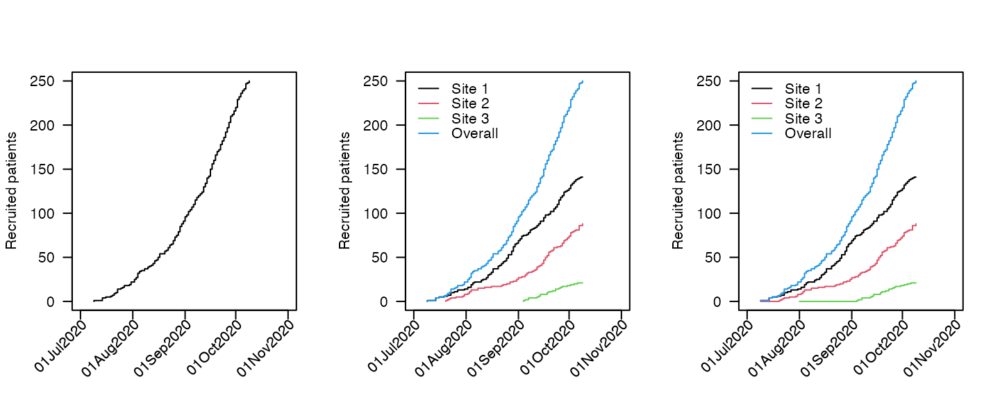
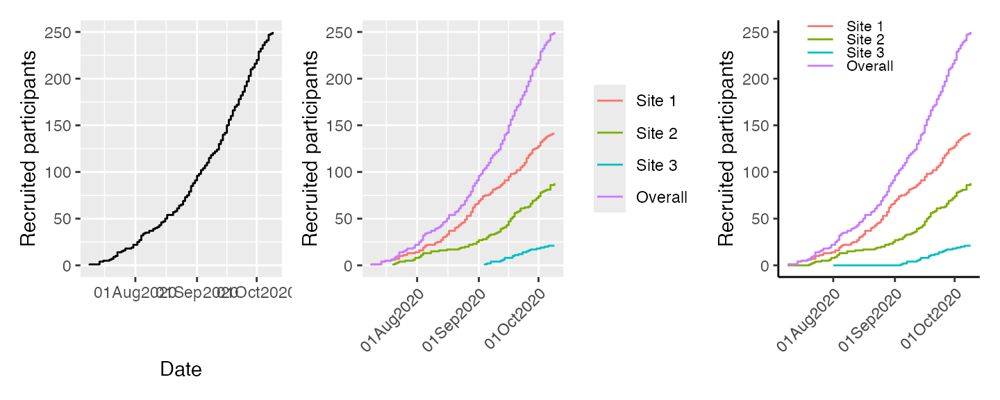
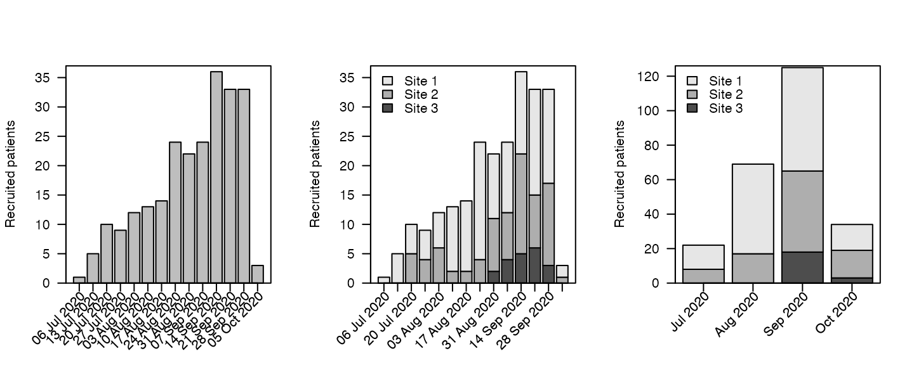
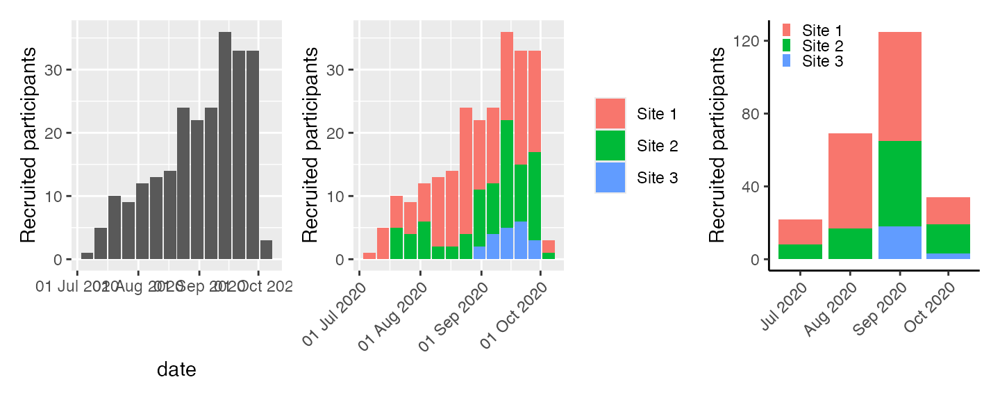
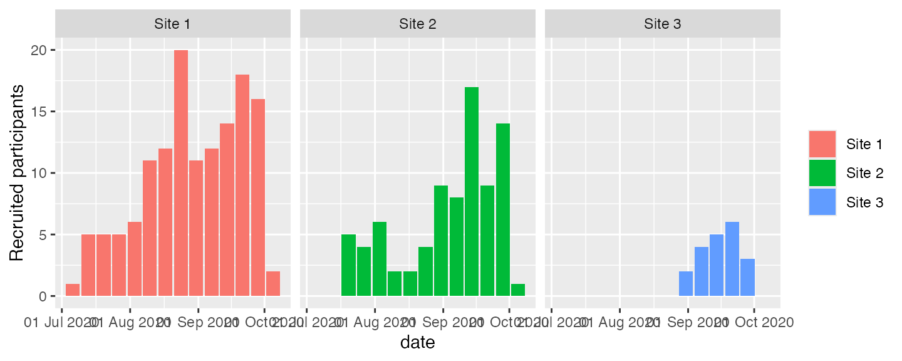
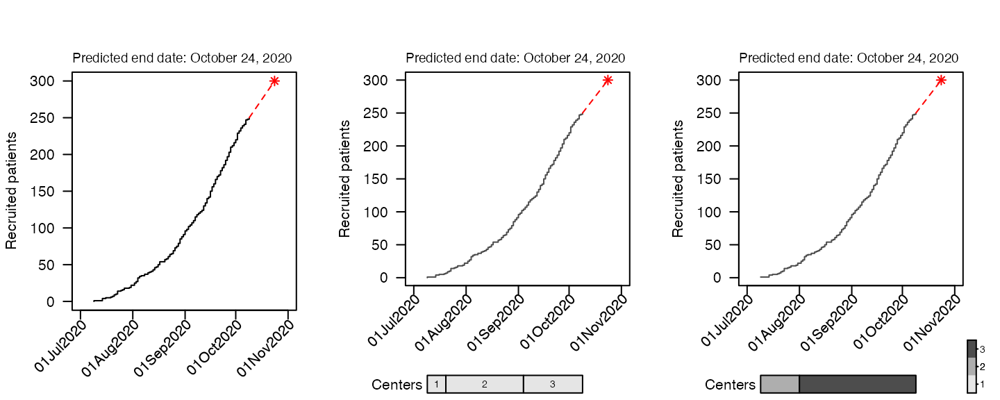

Following a trials recruitment is an important task for timing of analyses and ensuring that a trial will not run for too long (longer trials are more expensive). accrualPlot provides tools for easily creating recruitment plots and even for predicting when a trial will have successfully recruited all participants.
The package is loaded like any other:
library(accrualPlot)
#> Loading required package: lubridate
#>
#> Attaching package: 'lubridate'
#> The following objects are masked from 'package:base':
#>
#> date, intersect, setdiff, unionaccrual_df
To work with accrualPlot, we need some data, specifically dates and, optionally, site identifiers. Here’s some data that we will use in the following examples.
data(accrualdemo)
head(accrualdemo)
#> date site
#> 24 2020-07-09 Site 1
#> 87 2020-07-14 Site 1
#> 126 2020-07-14 Site 1
#> 193 2020-07-14 Site 1
#> 139 2020-07-16 Site 1
#> 248 2020-07-19 Site 1accrual_dfs are simply dataframes with the number of participants on each day participants are recruited (or site) began recruiting.
Monocentric trials obviously have only a single site, so we only need the x object we just created. We can pass this into the accrual_create_df function.
df <- accrual_create_df(accrualdemo$date)
print(df, head = TRUE)
#> 250 participants recruited between 2020-07-09 and 2020-10-09
#> Date Freq Cumulative
#> 1 2020-07-09 0 0
#> 2 2020-07-09 1 1
#> 3 2020-07-14 3 4
#> 4 2020-07-16 1 5
#> 5 2020-07-19 1 6
#> 6 2020-07-20 1 7In this case, the accrual_df has a single data frame.
For multicentric trials, we should also pass the site identifier to accrual_create_df in the by argument.
df2 <- accrual_create_df(accrualdemo$date, by = accrualdemo$site)
print(df2, head = TRUE)
#> Site 1:
#> 141 participants recruited between 2020-07-09 and 2020-10-09
#> Date Freq Cumulative
#> 1 2020-07-09 0 0
#> 2 2020-07-09 1 1
#> 3 2020-07-14 3 4
#> 4 2020-07-16 1 5
#> 5 2020-07-19 1 6
#> 6 2020-07-21 1 7
#>
#> Site 2:
#> 88 participants recruited between 2020-07-20 and 2020-10-09
#> Date Freq Cumulative
#> 1 2020-07-20 0 0
#> 2 2020-07-20 1 1
#> 3 2020-07-21 1 2
#> 4 2020-07-22 1 3
#> 5 2020-07-23 1 4
#> 6 2020-07-26 1 5
#>
#> Site 3:
#> 21 participants recruited between 2020-09-04 and 2020-10-09
#> Date Freq Cumulative
#> 1 2020-09-04 0 0
#> 2 2020-09-04 1 1
#> 3 2020-09-05 1 2
#> 4 2020-09-07 2 4
#> 5 2020-09-12 1 5
#> 6 2020-09-13 1 6
#>
#> Overall:
#> 250 participants recruited between 2020-07-09 and 2020-10-09
#> Date Freq Cumulative
#> 1 2020-07-09 0 0
#> 2 2020-07-09 1 1
#> 3 2020-07-14 3 4
#> 4 2020-07-16 1 5
#> 5 2020-07-19 1 6
#> 6 2020-07-20 1 7In this case, the accrual_df is a list of dataframes, one for each site and an overall.
By default, the start and end dates are defined based on the dates that you pass to accrual_create_df. You can override these via the start_date and current_date arguments. This is useful for when you have particularly slow recruiting trials (such as those with particularly strict inclusion criteria). For example, our fictitious example trial might have started recruiting on the 1st November. By adding this information, we modify other output
df3 <- accrual_create_df(accrualdemo$date, start_date = as.Date("2020-07-08"))For multicentric trials where different sites started recruiting at different times, we can pass a vector to start_date
start_date<-as.Date(c("2020-07-09","2020-07-09","2020-08-01"))
names(start_date)<-c("Site 1","Site 2","Site 3")
df4 <- accrual_create_df(accrualdemo$date, by = accrualdemo$site, start_date = start_date)accrualPlot has three flavours of plots:
* Cumulative
* Absolute
* Prediction
and supplies both base graphics as well as ggplot2 graphics implementations (allowing easier modification).
Cumulative plots show a standard step function of the number of participants recruited up to a given point in time. The plots are produced via the plot method (which is a wrapper for the internal function accrual_plot_cum)

For ggplot2 graphics, use the engine option:
library(patchwork)
library(ggplot2)
p1 <- plot(df, engine = "ggplot")
p2 <- plot(df2, engine = "ggplot") +
theme(axis.text.x = element_text(angle = 45, vjust = 1, hjust=1),
axis.title.x = element_blank())
p3 <- plot(df4, engine = "ggplot") +
labs(col = "Site") +
theme_classic() +
theme(legend.position = c(.35,.9),
legend.key.height = unit(2, "mm"),
legend.text=element_text(size=8),
legend.title=element_blank(),
axis.text.x = element_text(angle = 45, vjust = 1, hjust=1),
axis.title.x = element_blank())
p1 + p2 + p3
Recruitment plots per unit time can be obtained via the absolute method (specify which = "absolute" to plot)
par(mfrow = c(1, 3))
plot(df, which = "abs", unit = "week")
plot(df2, which = "abs", unit = "week", legend.list=list(x="topleft"), xlabsel=seq(1,20,by=2))
plot(df4, which = "abs", unit = "month",legend.list=list(x="topleft"))
Options for unit are year, month, week and day.
Where multiple sites exist, the different sites are indicated by different colours on the stacked bars.
p1 <- plot(df, which = "abs", unit = "week", engine = "ggplot")
p2 <- plot(df2, which = "abs", unit = "week", engine = "ggplot") +
theme(axis.text.x = element_text(angle = 45, vjust = 1, hjust=1),
axis.title.x = element_blank())
p3 <- plot(df4, which = "abs", unit = "month", engine = "ggplot") +
labs(fill = "Site") +
theme_classic() +
theme(legend.position = c(0.01,0.9),
legend.justification = "left",
legend.key.height = unit(2, "mm"),
legend.key.width = unit(2, "mm"),
legend.title=element_blank(),
axis.text.x = element_text(angle = 45, vjust = 1, hjust = 1),
axis.title.x = element_blank())
p1 + p2 + p3
It might be desirable to have panels for each site. This is easy to do with the ggplot implementation. The variable to use in this case is site, which is constructed in the appropriate plot function.
plot(df2, which = "abs", unit = "week", engine = "ggplot") + facet_wrap(~site)
It is also possible to predict the time point at which a certain number of participants has been recruited (for estimating when a study will be complete). If we want to recruit a total of 300 participants, we can put that in the target option.
par(mfrow = c(1, 3))
plot(df, which = "predict", target = 300, cex_prediction=0.9)
plot(df2, which = "predict", target = 300, cex_prediction=0.9)
plot(df4, which = "predict", target = 300, cex_prediction=0.9, center_legend="strip")
Or with ggplot2.
p1 <- plot(df, which = "predict", target = 300, engine = "ggplot2") +
theme(plot.title.position = "plot")
#> Scale for 'x' is already present. Adding another scale for 'x', which will
#> replace the existing scale.
p2 <- plot(df2, which = "predict", target=c("Site 1"=160,"Site 2"=100,"Site 3"=40,"Overall"=300),
engine = "ggplot2") +
labs(col = NULL) +
theme_classic() +
theme(legend.position = c(.025,.9),
legend.justification = "left",
legend.key.height = unit(2, "mm"),
legend.key.width = unit(2, "mm"),
legend.background = element_rect(fill = NA),
axis.text.x = element_text(angle = 45, vjust = 1, hjust = 1),
axis.title.x = element_blank())
#> Scale for 'x' is already present. Adding another scale for 'x', which will
#> replace the existing scale.
p1 + p2In the second ggplot2 example above, we specify different targets for each site, plus a study-level target. The syntax is the same for base graphics.
It’s not strictly necessary to use plot for any of the above figures. plot is a wrapper which selects one of 6 underlying functions depending on the value of the which and engine arguments. The underlying functions for base graphics are accrual_plot_cum for cumulative plots, accrual_plot_abs for absolute values, and accrual_plot_predict for the prediction plots. The ggplot equivalents just prepend those names with gg_, i.e. gg_accrual_plot_cum, gg_accrual_plot_abs and gg_accrual_plot_predict. For more clarity, it might be desirable to use those instead, e.g.
gg_accrual_plot_predict(df2, target = c(150, 100, 100, 350))Tables of recruitment can also be generated using accrualPlot, via the summary method. As with absolute recruitment above, a unit of time can be specified.
# accrual_table(df)
summary(df, unit = "day")
#> start_date time n
#> 1 First participant in Days accruing Participants accrued
#> 2 09Jul2020 92 250
#> rate
#> 1 Accrual rate (per day)
#> 2 2.72
summary(df2, unit = "day")
#> name start_date time n
#> 1 Center First participant in Days accruing Participants accrued
#> 2 Site 1 09Jul2020 92 141
#> 3 Site 2 20Jul2020 81 88
#> 4 Site 3 04Sep2020 35 21
#> 5 Overall 09Jul2020 92 250
#> rate
#> 1 Accrual rate (per day)
#> 2 1.53
#> 3 1.09
#> 4 0.60
#> 5 2.72
summary(df3, unit = "day")
#> start_date time n
#> 1 First participant in Days accruing Participants accrued
#> 2 08Jul2020 93 250
#> rate
#> 1 Accrual rate (per day)
#> 2 2.69
summary(df3, unit = "day", header = FALSE)
#> start_date time n rate
#> 1 08Jul2020 93 250 2.69